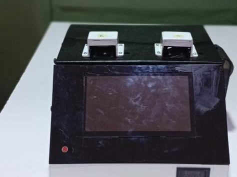

ParaVision — AI Diagnostic Support System
ParaVision is an AI-powered diagnostic support system that helps healthcare professionals detect malaria and intestinal parasites faster and more consistently through intelligent image analysis — reducing laboratory workload and improving access to timely diagnostic support, with potential for deployment across Nigeria and other African markets.
Tech stack & repo
Team: C2P Tech Hub student-led team